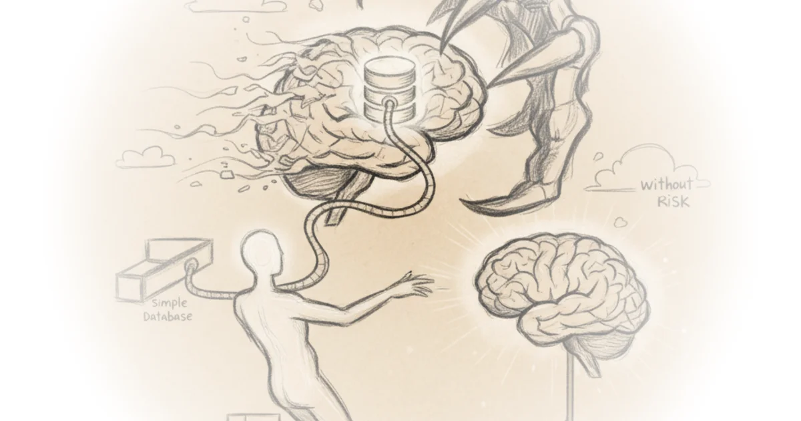

Nate B Jones makes a startling claim: Anthropic didn’t just release a minor feature—they strategically engineered Claude’s new /loop capability to replicate OpenClaw’s core functionality while sidestepping its notorious security flaws. What’s most compelling isn’t the technical how, but Jones’ evidence that this wasn’t accidental: he argues Anthropic intentionally built the missing piece for secure, proactive AI agents, and thousands of users are already assembling the solution using tools they already own.
The Agent Triad, Decoded
Jones cuts through the hype by defining exactly what transforms a chatbot into a true agent. He identifies three non-negotiable components with surgical precision: memory (persistent data storage), proactivity (scheduled autonomous action), and tools (system integrations). His framing avoids abstract theory, grounding each element in tangible failure modes. Nate B Jones writes, "Without memory, every single interaction starts from zero. The agent is perpetually a new hire on their very first day." This isn’t just descriptive—it’s diagnostic. He shows how missing any one piece cripples utility, like an agent "that can think, but it doesn’t have hands and feet. It’s a brain in a jar."

The brilliance lies in how he demonstrates synergy. Jones doesn’t just list features; he reveals their compound effect through a health-tracking example. When the agent gains memory, it shifts from giving generic advice to identifying patterns across weeks: "Hey, your energy problems seem to correlate strongly with late eating and late sleep, not with caffeine." This lands because it mirrors real-world user frustration—anyone who’s asked an AI for recurring help knows the agony of repeating context. Jones proves memory turns reactive prompts into longitudinal insight, making the case for SQL databases (like his OpenBrain project) not as niche tools, but as foundational infrastructure.
One recites, the other accumulates evidence and acts on a pattern.
Why Timing Changes Everything
Jones’ historical context elevates this beyond a tutorial. He connects Anthropic’s /loop launch to the messy aftermath of OpenClaw—a popular but risky open-source agent framework that flooded GitHub in early 2023, only to face widespread criticism over security vulnerabilities by summer. Where OpenClaw required users to "download that repo and install OpenClaw specifically" with inherent risks, Jones argues Anthropic delivered the same capability natively within Claude’s walled garden. This reframes /loop not as a minor update but as a strategic countermove in the agent wars. Crucially, he notes OpenBrain’s evolution from his initial Substack post into a "community project" with "thousands" of implementations—a detail that underscores why Anthropic’s timing matters now. The ecosystem is primed, and Jones positions /loop as the catalyst that makes decentralized agent building viable.
Critics might note that relying on MCP servers (the simple connector protocol Jones champions) still introduces potential attack surfaces, however minimal compared to OpenClaw’s approach. The argument also leans heavily on individual use cases; enterprise-scale deployments might demand more robust orchestration than /loop currently offers. Yet Jones sidesteps these gaps by focusing on what’s immediately achievable for his audience—something the business example subtly addresses. When he describes an agent flagging "a similar example with a similar trajectory from 6 months ago," he proves the framework scales without overpromising.
The Real Innovation: Legos, Not Launchpads
Most agent coverage fixates on futuristic scenarios. Jones’ genius is insisting the revolution is already in your toolkit. He dismisses the need for complex frameworks by showing how "a SQL database tied to an MCP server" combined with /loop creates proactive workflows. His video-generation example—where Claude "passes all those names, those conversation summaries... to Remotion and generates a personalized briefing video"—isn’t speculative. It’s a concrete demonstration of tools + memory + proactivity solving real pain points today. This lands because Jones avoids agent anthropomorphism; he treats them as workflow automators, not digital employees. The result feels less like sci-fi and more like a masterclass in pragmatic integration.
Bottom Line
Jones’ strongest contribution is reframing agent development as an exercise in composable primitives—not monolithic platforms—making the technology instantly accessible. His biggest vulnerability is underestimating enterprise security scrutiny; businesses may still demand more auditability than /loop currently provides. Watch how Anthropic monetizes this: if they bake /loop into team plans while keeping OpenClaw’s risks in users’ minds, they’ll turn a technical feature into a strategic moat.